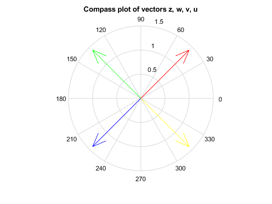
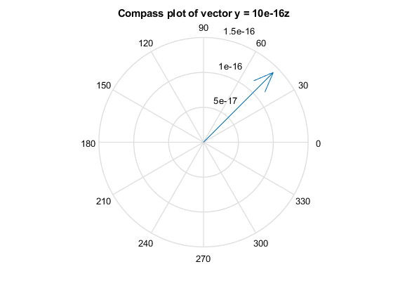

Problem #0.21
By: Ian Doarn Class: EECE 3203
Contents
part a
z = 1 + 1j; w = -1 + 1j; v = -1 - 1j; u = 1 - 1j; compass(z, 'r') hold on compass(w, 'g') compass(v, 'b') compass(u, 'y') title('Compass plot of vectors z, w, v, u'); hold off
part b
summed = z + w + v + u
part c
ratio_zw = z/w ratio_wv = w/v ratio_uz = u/z ratio_uw = u/w
part d
y = 10^-16*z
figure();
compass(y)
title('Compass plot of vector y = 10e-16z');
mag_y = norm(y)
summed =
0
ratio_zw =
0.0000 - 1.0000i
ratio_wv =
0.0000 - 1.0000i
ratio_uz =
0.0000 - 1.0000i
ratio_uw =
-1
y =
1.0000e-16 + 1.0000e-16i
mag_y =
1.4142e-16
 